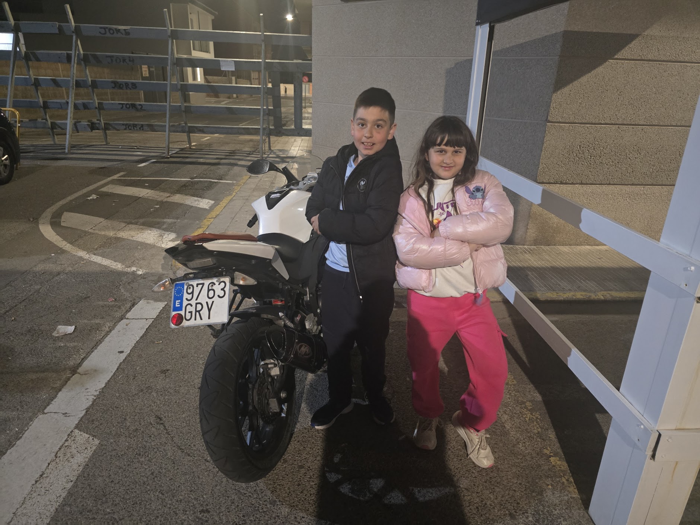

El Piloto de Benifairó
"Soy de Benifairó y me encantan las motos deportivas."
La adrenalina, el sonido del motor y el estilo único de las motos deportivas son mi gran pasión.

Mi Máquina Favorita
Pura potencia y estilo en una deportiva blanca.

Detalles
Rueda trasera deportiva

Estilo Único

Aerodinámica
Lista para rodar